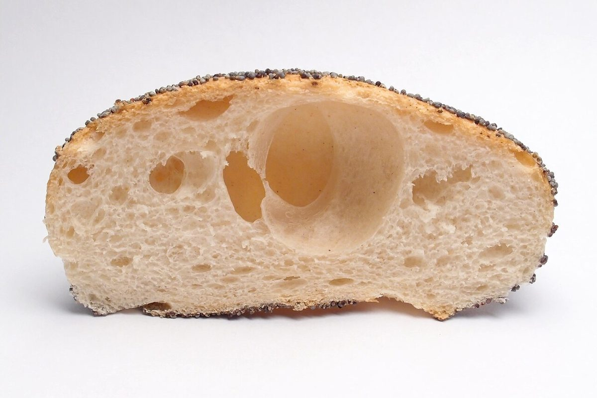

制作側の連想
水筒の部位を、配置図にしてみる
このサイトは、持ち歩く水筒を横から見た図として作りました。六つの部位に番号をふり、上の図と並べています。制作側の連想で、お店の理念・由来とは無関係です。実際の製品の仕様を示すものでもありません。
凡例
六つの部位
- 1上ぶた兼コップ水筒のてっぺんにかぶせる、コップとしても使えるふた。
- 2中栓飲み口をふさぐ、ふたの内側にはまる栓。
- 3パッキン中栓のまわりに付く、すき間をふさぐ輪っか。
- 4本体中身を入れる、二重になった筒の部分。
- 5肩ひも持ち歩くために本体へ掛けて使うひも。
- 6底カバー本体の底を包んで、傷や音をやわらげるカバー。
ギャラリー(イメージ)
パンとコーヒー豆の写真




写真はパンとコーヒーのイメージです。お店のものではなく、お店で提供している商品を示すものでもありません。
ご案内
お店のこと(確認できたものだけ)
| 所在地 | 〒506-0013 岐阜県高山市有楽町45 |
|---|---|
| 電話 | 準備中 |
| 営業時間 | 準備中 |
| 定休日 | 準備中 |
| ご予約 | 準備中 |
| 駐車場 | 準備中 |
| SNS | Instagram @junecoffee_takayama |